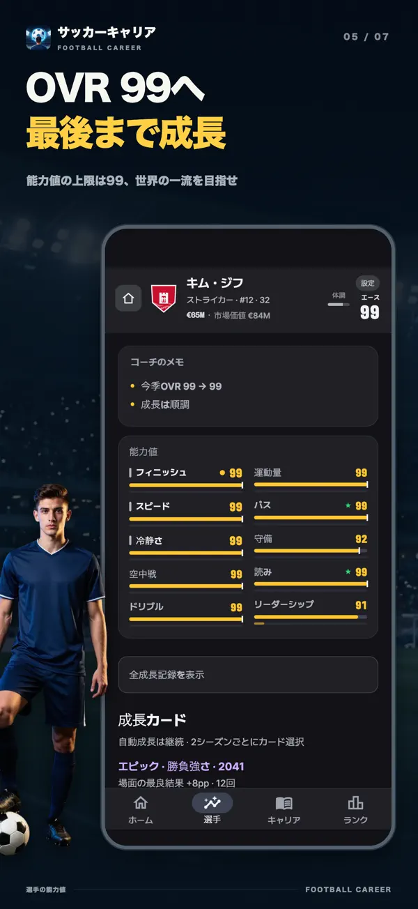
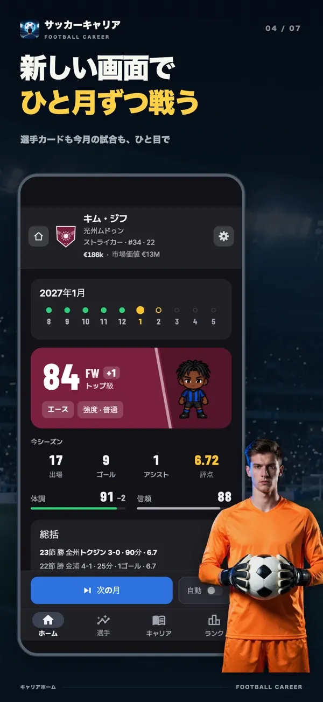
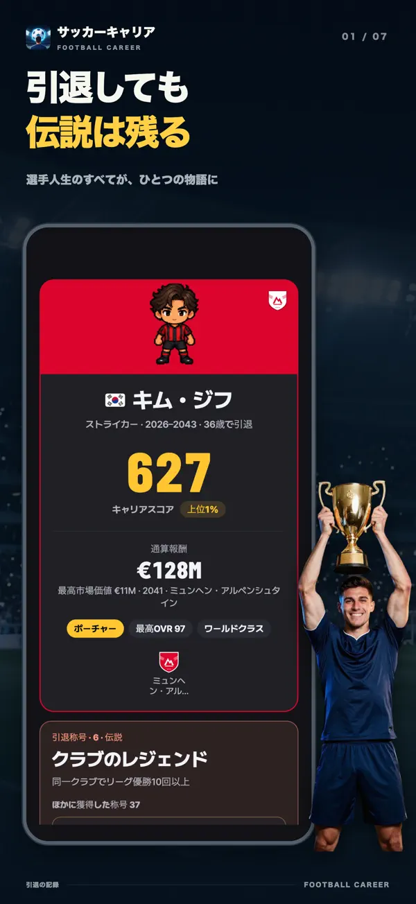
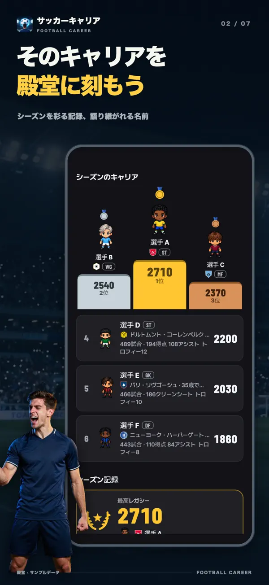
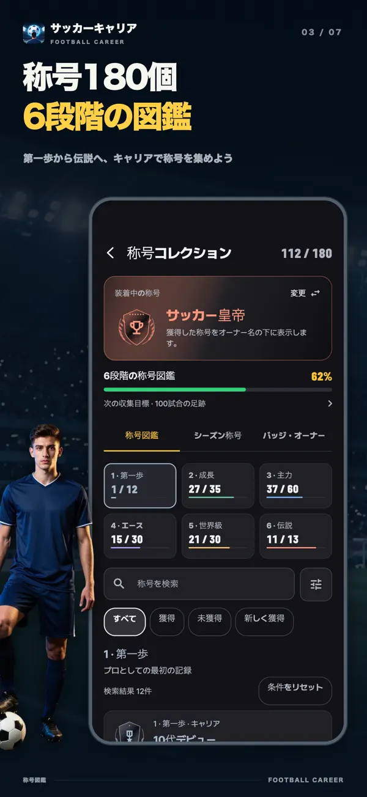
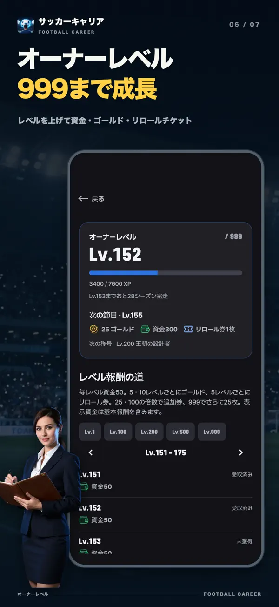
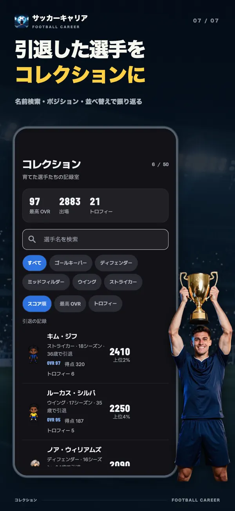

- YT Lab
- サッカー選手育成: プロキャリアシミュレーション

サッカー選手育成 1枚のカードが、キャリアを変える
サッカー選手育成: プロキャリアシミュレーションでは、2シーズンごとに同じレアリティの成長カード3枚から1枚を選びます。今すぐ能力を伸ばすか、隠れた限界を広げるか、条件達成で大きな報酬を狙うか。17歳のユースから引退まで、一人の選手の人生を育てるゲームです。
次の成長を選ぼう
27歳 ストライカー OVR 96各カードは1回ずつ引き直せます。レアリティは変わりません。
アプリと同じカードと計算を使った体験版です。27歳のスターストライカーに、最も珍しいLegendラウンドが訪れた場面を再現しました。引き直しも次のカードも、アプリと同じ候補と確率で抽選します。体験は毎回、同じ選手から始まります。


無料でダウンロードでき、アプリ内課金があります。iPhone・iPad（iOS 15以上）とAndroid 7.0以上に対応しています。
2シーズンごとに、3枚から1枚
能力はプレーに応じて自動で伸びます。成長カードは、その上に重ねる選択です。開始時と、その後2シーズンごとに、同じレアリティで系統の異なる3枚から1枚を獲得。レアリティが高いほど効果も大きく、最初のカードはエピック確定です。
すぐに伸びるカード
選んだ瞬間に能力が上がります。「集中の成果」は主要能力+6と限界+3。「穴を埋める」は最も低い主要能力と補助能力をそれぞれ4伸ばします。
限界を広げるカード
能力ごとに隠れた限界があり、自動成長はそこで止まります。「ほんの少しの才能」「開かれた可能性」「才能の突破」は、その壁を押し上げます。カードで上げられる限界は95までです。
条件達成で報われるカード
「ゴールハンター」は5ゴールごとにフィニッシュ+1、「試合の主役」はMOM 2回ごとに能力+2、「飛躍の準備」は30試合出場で主要能力+8。活躍してこその報酬です。
何かを得て、何かを失うカード
「爆発的スプリント」はスピード+8の代わりに空中戦−3。「悪魔的な才能」は主要能力の限界+12と能力+10の代わりに補助能力−3。強さには代償もあります。
現役の時間を延ばすカード
「二度目の全盛期」は3シーズンの間、衰えを半減し、現役を2年延長。「最後の炎」は主要能力3つを+6する代わりに、そのシーズン終了時に引退します。
引き直しは無料
気に入らないカードは1枚ずつ引き直せます。レアリティはそのまま、残り2枚と系統が重ならないカードに変わります。
ベンチから、世界年間最優秀選手へ
最初からトップリーグのレギュラーにはなれません。ユースとリザーブを経て、トップチームのベンチから居場所をつかみます。その先に待つのは、毎シーズン世界一を決める世界年間最優秀選手。どこまで届くかは、選んだカードとシーズンごとの記録次第です。
- 17歳
ユース
17歳のユースから始まります。ユーススタートパックがあれば、15歳から始められます。
- 19歳までに
リザーブ
トップチームの実力に近づくか、19歳になるとリザーブへ。昇格はシーズン終了時に決まります。
- 16–21リーグ別のデビュー年齢
トップチームのベンチからレギュラーへ
デビュー年齢はリーグごとに異なります。年齢・能力・シーズン評価が基準を超えるとトップチームへ。出場時間は監督の信頼で決まります。
- 夏シーズン終了後
移籍と契約更新
移籍を申し出たり、届いたオファーを選んだり。エージェントとともに年俸やレギュラー保証、契約解除条項などを交渉します。
- 18+トップチーム所属
代表チーム
18歳以上のトップチーム選手は代表招集の候補になります。世界大会と大陸大会が2年ごとに交互に開催されます。
- 36–41ポジション別
引退後に残るもの
標準ではウイングは36歳、ゴールキーパーは41歳までプレーできます。カードやイベントで延長でき、それより前に自分で引退を選ぶこともできます。
ひと月ずつ戦い、プレーした分だけ成長
1シーズンは8月から5月までの10か月、38試合。出場、ゴール、アシスト、クリーンシート、MOM、評価がその月の成長につながり、何がどれだけ伸びたかを数値で確認できます。ひと月ずつ進めても、自動で進めても構いません。
ひと月の成長ドリブル 57 → 58 +1
活躍した月には月間MVPや月間ベストイレブン、ゴールキーパーなら月間ベストセーブも。隠れた抽選ではなく、記録で決まります。シーズン末には得点王、シーズンベストイレブン、年間最優秀選手、さらに世界年間最優秀選手を狙えます。
ゲーム画面







このサッカーゲームならではの体験
監督ではなく、一人の選手として
スカッド編成も戦術ボードも移籍予算もありません。出場時間を決めるのは監督。監督が変われば、求められる選手像も変わります。
確率を隠しません
シーズン中の出来事では、選択肢ごとに3つの結果の確率をバーとパーセントで先に表示。能力、監督の信頼、コンディション、成長カードがその数字をどう動かしたかも確認できます。
リーグが変われば、キャリアも変わる
イングランド、スペイン、ドイツ、イタリア、フランスから韓国、日本、南米まで。リーグごとにデビュー年齢、賃金、外国人枠が異なります。リーグ、クラブ、選手、監督の名前はすべて架空です。
引退しても、記録は残る
通算成績と、実力・生産性・積み重ね・受賞・優勝・舞台の6軸評価が残ります。ゲームのルールでシミュレーションした2万のキャリアと比べ、上位何パーセントかも表示。終えたキャリアは週間・月間・総合ランキングとシーズン殿堂に登録されます。
よくある質問
- 無料で遊べますか？
- 無料でダウンロードし、最後まで遊べます。成長カードも引き直しも無料です。広告削除、ポジションパック、ユーススタートパック、応援パック、ゴールド、リロール券は任意で購入できます。開始能力の抽選確率は、無料・広告・リロール券のどれでも同じです。
- オフラインでも遊べますか？
- キャリアの進行と保存は端末内で行うため、オフラインで遊べます。ランキング、購入、ゴールドの使用、端末間の引き継ぎにはインターネット接続が必要です。
- PCやブラウザで遊べますか？
- iPhone・iPadとAndroid向けのアプリです。ブラウザで遊ぶウェブ版はありません。このページでは成長カードの選択を体験できます。
- どのポジションで遊べますか？
- ゴールキーパー、ディフェンダー、ミッドフィルダー、ウイング、ストライカーです。ゴールキーパーとストライカーは無料で、残り3つはポジションパックで解放します。各ポジションに7つ、計35のプレースタイルがあり、すべて無料です。
- 同時にいくつのキャリアを進められますか？
- キャリアスロットは3つ。同時に3人を育てられます。国籍によって最初のリーグと代表チームが決まります。
- 実在の選手やクラブは登場しますか？
- 登場しません。リーグ、クラブ、選手、監督はすべて架空です。
- ランキングに名前が公開されますか？
- 終えたキャリアはランキングに登録されますが、いつでも無効にできます。自分で変更した名前は、同意した場合のみ公開されます。